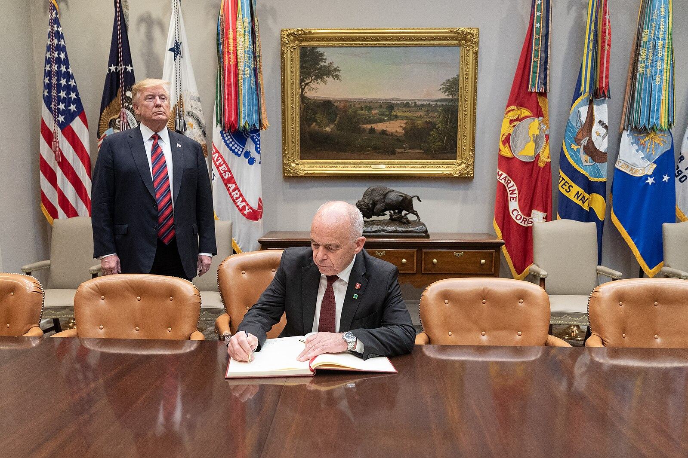
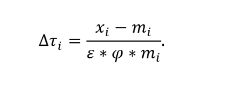

Understanding Data and Law
What are EU’s Digital barriers?
Explainer on EU’s Digital taxes and laws and their impact on US trade negotiations. Digital services and goods form a large portion of US-...
Tracking US Trade negotiations under the second Trump administration.
The United States has historically occupied a central position in the global trading system, supported by robust international agreements, a large domestic market, and the international predominance of the US dollar. The policy disruptions introduced by the Trump administration, particularly with regard to bilateral trade arrangements, thus, generated significant ripple effects across global markets.
These developments have heightened the economic and geopolitical weight attached to individual trade agreements and tariff measures. This platform systematically tracks US trade data and negotiations following these disruptions in real time, offering comprehensive updates, rigorous analysis, and data-driven insights.
Understanding Data and Law
Explainer on EU’s Digital taxes and laws and their impact on US trade negotiations. Digital services and goods form a large portion of US-...

Understanding Data and Law
Understanding the logic behind some of highest tariffed nations with some of the lowest trade volumes with the US. In 2025, US Tariff rate...
Understanding Data and Law
Understanding the countries who escaped reciprocal tariffs. Belarus, Burkina Faso, Cuba, North Korea, Palau, Russia, Seychelles, Somalia a...

Understanding Data and Law
An explainer on the factors determining these tariff What are Tariffs and how are they determined? Tariffs are defined as taxes imposed by...

Understanding Data and Law
understanding a key negotiation issue of Japan and India SPS or Sanitary and phytosanitary measures are health and safety measures that ar...

Understanding Politics
US-Japan trade summary (2024) In 2024, US goods imports from Japan were ~$152.06 billion, ~4.5 % of total US goods imports Japan’s top exp...

Understanding Politics
US-UK trade summary (2024) In 2024, US goods imports from the UK were $68.1 billion, representing ~2.2% of total US merchandise imports. ~...

Understanding Politics
US-Canada trade summary (2024) In 2024, US goods imports from Canada totaled approximately $412.7 billion, accounting for about 17 % of to...

Understanding Politics
US-EU trade summary (2024) In 2024, US imported $606 billion in goods from the EU, representing ~19.7 % of total US goods imports (~$3.07 ...
Understanding Data and Law
A brief explainer of EU’s trade ‘Bazooka’ The European Union’s Anti-Coercion Instrument (ACI) is a strategic trade defence tool designed t...

Understanding Politics
US-China trade summary (2024) In 2024, US goods imports from China reached ~$438.9 billion, comprising ~13.3 % of total US goods imports (...

Understanding Politics
US-India trade summary (2024) In 2024, US goods imports from India were ~$87.4 billion, representing ~2.6 % of total US imports. US import...
Donald Trump uses trade- tariff policies as both an economic weapon and a political statement. This approach was partially implemented in his first term and gained a renewed prominence in his second term.
Trump announced sweeping tariffs on imports across multiple sectors, with a renewed emphasis on punishing countries seen as unfair competitors. His initial plan included a universal baseline tariff on all foreign goods followed by series of reciprocal tariffs and industry specific regulations. Today, these rates are determined broadly by negotiated outcomes and other geo-economic factors for specific items or sectors.
The ideological backbone of Trump’s tariff policy is economic nationalism. It frames tariffs as a tool to bring back American manufacturing jobs, reduce dependency on foreign supply chains, rebalance trade deficits, and use economic pressure to achieve broader foreign policy goals.
Tariffs are positioned not just as economic tools but as negotiating leverage. The Trump administration has used unilateral tariff actions, tied tariff reductions to concessions in trade talks, used tariffs to accelerate reshoring, and treated tariff policy as leverage for strategic goals.
The core motivation behind these tariffs is Trump’s agenda to bring back manufacturing to the US. Owing to this agenda, Trump tariffs have largely focused on goods rather than services, although services-related issues such as digital services and intellectual property also appear during negotiations.
Monitors US trade statistics, employment, inflation figures, and the legal frameworks behind the tariff negotiations.
Tracks the political motives, country-specific timelines, and tentative deal positions shaping tariff negotiations.